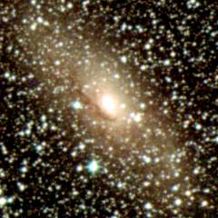

|
|
| NGC 4945 | M83 |
The NGC 5128 group is another famous group of galaxies in the southern hemisphere. There are several bright galaxies here - especially NGC 5128 and M83. NGC 5128 is the fifth brightest galaxy in the sky and one of the strangest looking galaxies in the nearby universe.
Below - two large galaxies in the NGC 5128 group. NGC 4945 (left) is the second largest galaxy in this group and it is a spiral galaxy seen almost edge-on. M83 (right) is a very famous spiral galaxy seen face-on.
|
|
| NGC 4945 | M83 |
This is a list of the main galaxies in the NGC 5128 group. This group lies close to the plane of the Milky Way and there may be galaxies behind the plane of the Milky Way in this group which have yet to be discovered. The Circinus Galaxy (ESO 97-13) is included in this list because although it lies 25 degrees to the south of the centre of the group it is probably at about the right distance to included as a member galaxy.
1 2 3 4 5 6 7 8 9
Name Equatorial Blue Type Size Size RV Other
Coordinates Mag (') kly km/s Names
RA Dec
ESO 321-14 12 13.8 -38 14 15.9 Irr 1.4 5 907
ESO 381-18 12 44.4 -35 56 15.7 Sm 0.8 5 901
ESO 381-20 12 46.0 -33 50 14.7 Irr 3.0 10 884
NGC 4945 13 05.4 -49 28 9.3 SBc 20.0 80 798
ESO 269-58 13 10.6 -47 00 13.2 Sa 3.0 10 642
ESO 269-66 13 13.2 -44 53 14.1 E 1.7 5 1041
NGC 5068 13 18.9 -21 03 10.6 SBc 7.2 30 974
NGC 5102 13 21.9 -36 38 10.3 S0 8.7 35 737
NGC 5128 13 25.4 -43 01 7.7 S0 25.7 105 795
IC 4247 13 26.8 -30 22 14.6 Sbc 1.3 5 697
ESO 324-24 13 27.6 -41 29 12.9 Irr 3.2 15 766
NGC 5206 13 33.7 -48 09 12.0 S0 3.7 15 796
ESO 270-17 13 34.8 -45 32 11.8 SBm 12.0 50 1060
ESO 444-78 13 36.5 -29 14 15.9 Irr 1.2 5 850 UGCA 365
M83 13 37.0 -29 52 7.9 SBc 12.9 50 786 NGC 5236
ESO 444-84 13 37.3 -28 03 15.5 Irr 1.3 5 865
NGC 5237 13 37.7 -42 51 13.2 Sa 1.9 10 598
NGC 5253 13 39.9 -31 38 10.7 Sd 5.0 20 670
IC 4316 13 40.3 -28 53 14.6 Irr 1.7 5 854
NGC 5264 13 41.6 -29 55 12.5 Irr 2.5 10 751
ESO 325-11 13 45.0 -41 52 14.0 Irr 2.7 10 782
ESO 174-B1 13 48.0 -53 21 14.4 S0 2.8 10 887 PGC 48937
ESO 383-87 13 49.3 -36 04 11.7 SBd 4.5 20 578
NGC 5408 14 03.4 -41 23 12.2 Irr 1.6 5 733
ESO 97-13 14 13.2 -65 20 12.0 Sb 6.9 30 578 Circinus
PGC 51659 14 28.1 -46 18 15.0 Irr 2.4 10 585 A1424-46
ESO 222-10 14 35.0 -49 24 15.9 Irr 1.0 5 806
ESO 272-25 14 43.4 -44 42 14.8 Irr 0.5 2 804
PGC 52593 14 43.5 -44 43 14.5 Irr 1.5 5 870 A1440-44
ESO 223-09 15 01.1 -48 18 13.2 Irr 2.6 10 748
ESO 274-01 15 14.2 -46 49 11.7 Scd 11.0 45 674
|
Column 1: The usual name of the galaxy.
Column 2: The Right Ascension for epoch 2000.
Column 3: The Declination for epoch 2000.
Column 4: The blue apparent magnitude of the galaxy.
Column 5: The galaxy type: E=Elliptical, S0=Lenticular, Sa,Sb,Sc,Sd=Spiral,
SBa,SBb,SBc,SBd=Barred Spiral, Sm,SBm,Irr=Irregular.
Column 6: The angular diameter of the galaxy (arcminutes).
Column 7: The diameter of the galaxy (thousands of light years).
Column 8: The recessional velocity (km/s) of the galaxy relative to
the cosmic microwave background.
Column 9: Other names of the galaxy.
References:
Karachentsev I, Sharina M, Dolphin A, Grebel E, Geisler D, Guhathakurta P, Hodge P,
Karachentseva V, Sarajedini A, Seitzer P, (2002), New distances to galaxies
in the Centaurus A group. Astron Astrophys, 385, 21.
Cote S, Freeman K, Carignan C, Quinn P, (1997), Discovery of Numerous Dwarf Galaxies
in the Two Nearest Groups of Galaxies. Astron J, 114, 1313.
Schmidt K, Priebe A, Boller T, (1993), Nearby Galaxies. Astron Nachr, 314, 371.
The HyperLeda Database, (2003).
Below - three more galaxies in the NGC 5128 group. NGC 5068 (left) is a small spiral galaxy which lies about 20 degrees to the north of the centre of the group. NGC 5102 (centre) is a lenticular galaxy. ESO 270-17 (right) is a fairly obscured edge-on irregular (or possibly spiral) galaxy.
| NGC 5068 | NGC 5102 | ESO 270-17 |
Shown below is NGC 5128. This is a remarkable galaxy. It is officially classified as a lenticular galaxy (a galaxy with a central bulge surrounded by a smooth disk of stars) but it looks very strange - it was only in 1952 that astronomers confirmed that it was definitely a galaxy. The galaxy is bisected by a thick, dark, lane of dust, and it is also a strong source of radio waves - the galaxy is commonly called Centaurus A by radio astronomers because it was the first major source of radio waves discovered in this constellation back in the 1950's. It is the nearest radio galaxy. Observations with radio and infra-red telescopes show that NGC 5128 swallowed a spiral galaxy probably about five hundred million years ago and the effects of the collision powers the strong radio emission.
Below - three more galaxies associated with the NGC 5128 group. NGC 5253 (left) is a small spiral/irregular galaxy near M83. ESO 97-13 (centre) is a spiral galaxy which is better known as the Circinus Galaxy. It is a very obscured galaxy which lies twenty degrees to the south of the group on the other side of the Milky Way. ESO 274-1 (right) is an obscured edge-on spiral galaxy on the left side of the group.
|  | ||
| NGC 5253 | ESO 97-13 | ESO 274-01 |
| Properties of the NGC 5128 Group | |
|---|---|
| Equatorial Coordinates | RA=13h40m Dec=-40° |
| Galactic Coordinates | l=315° b=+20° |
| Supergalactic Coordinates | L=160° B=0° |
| Distance to the centre of the group | 14 million light years |
| Number of large galaxies | 7 |
| Alternative names for the group | Centaurus A Group M83 Group |